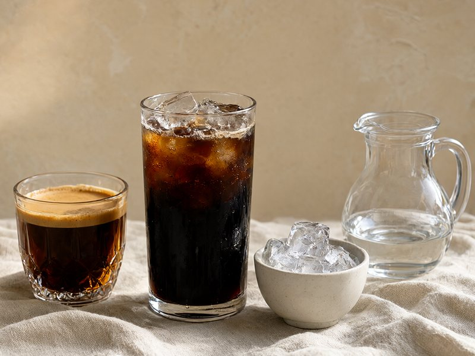
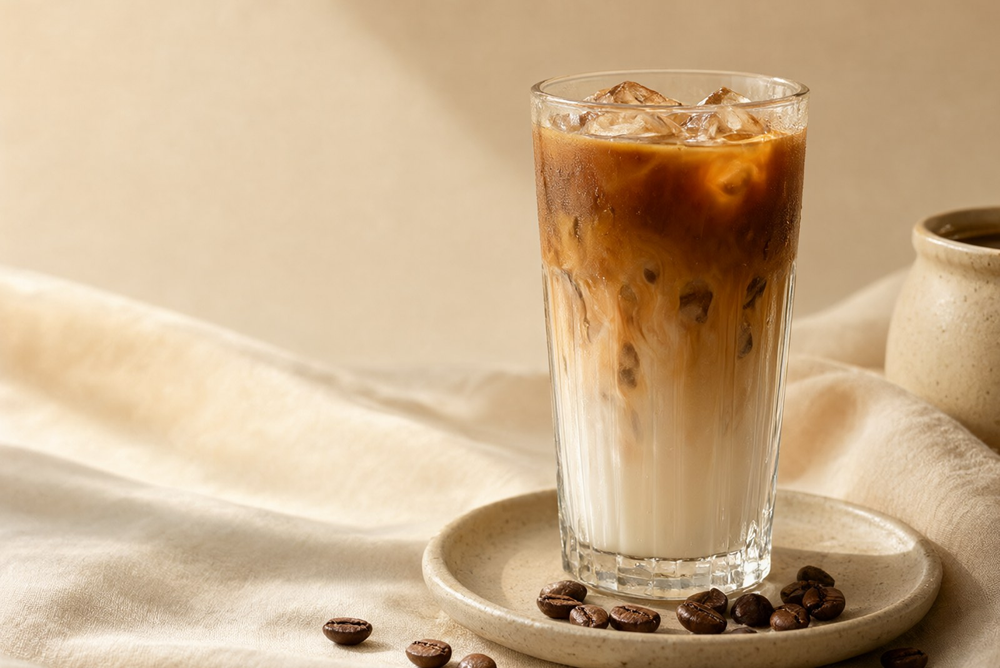
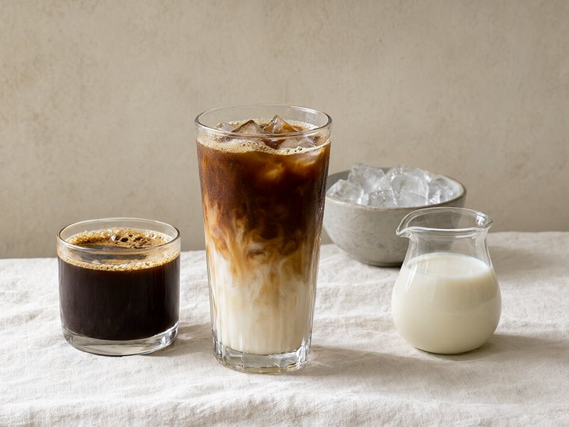
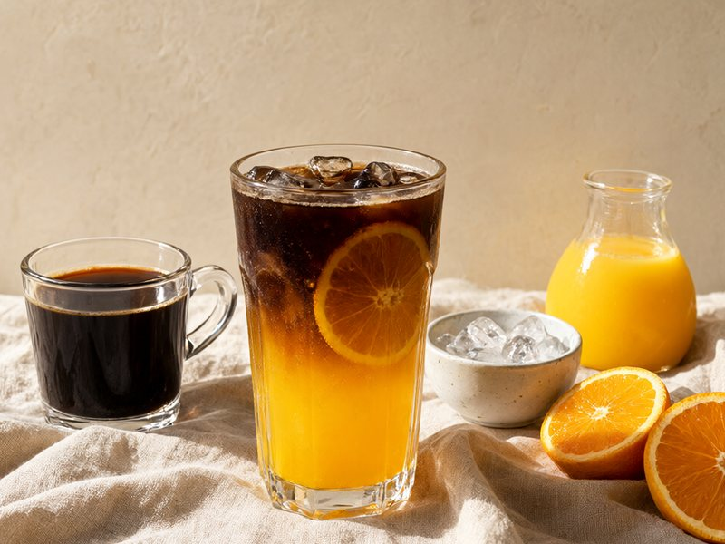
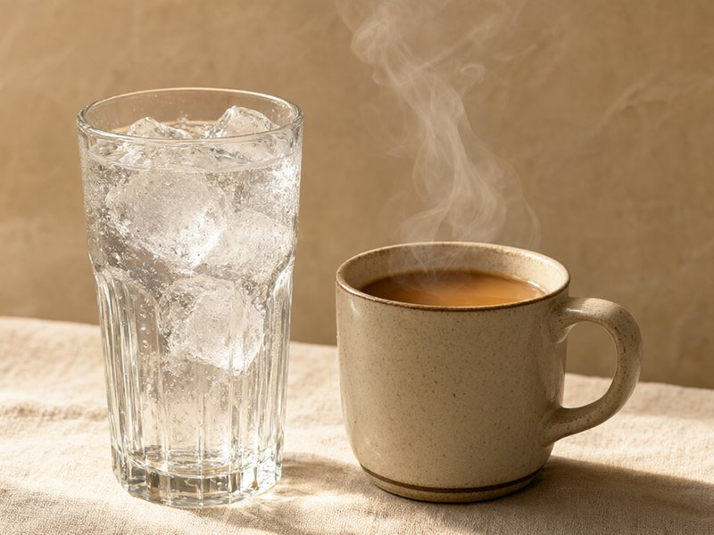
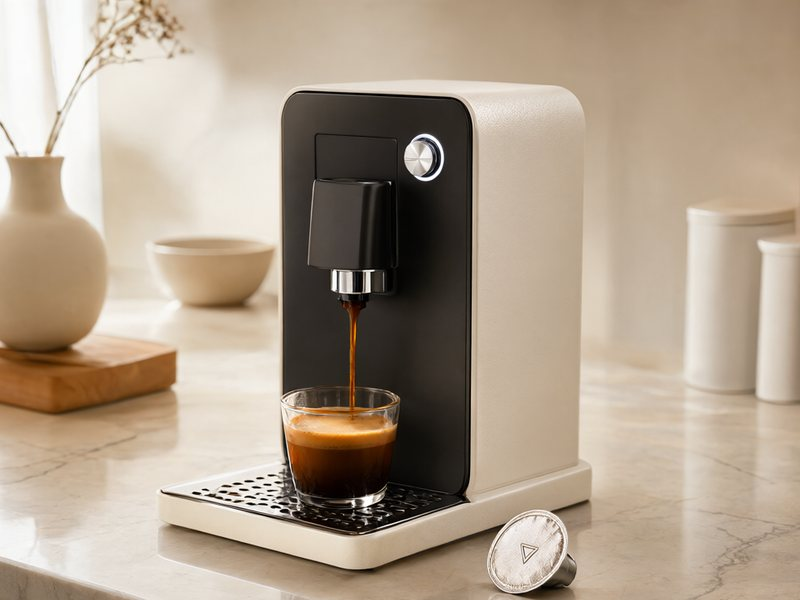
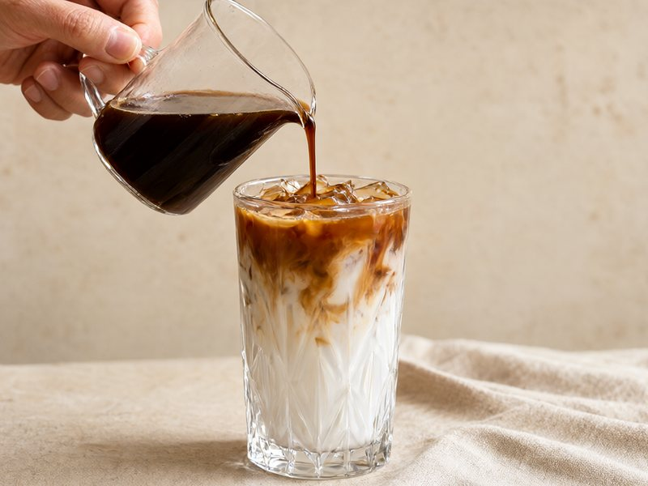
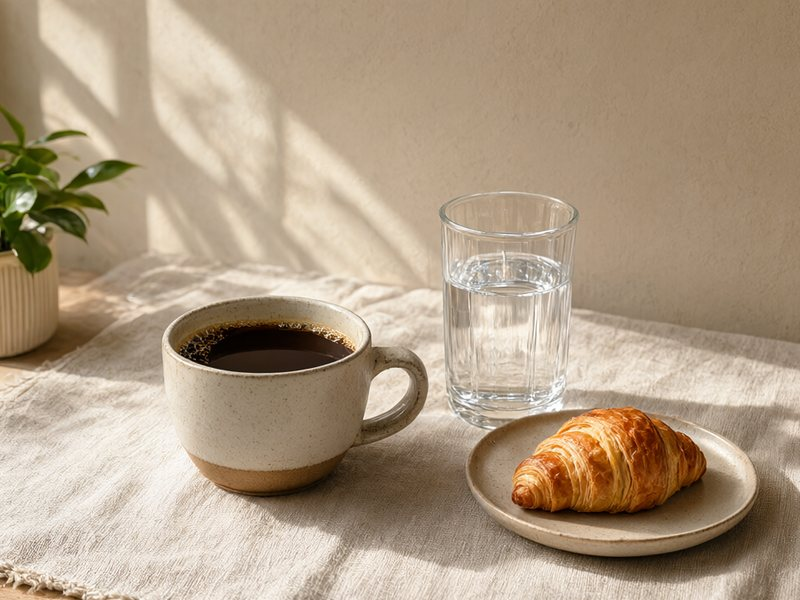

咖浓缩+
冰冰块+
水冰水
咖啡打底，冰和水负责拉长。想更醒，就把水换成气泡水。
胶囊机特别版 · 99 款家用配方
一台胶囊机，一颗浓缩，和手边的牛奶、果汁、气泡水。
把这 99 种搭配，收进一本随时能翻的册子。

01 — FORMULA
把杯子拆成三部分：咖啡、液体、冰。剩下的，只是换口味。

咖啡打底，冰和水负责拉长。想更醒，就把水换成气泡水。

牛奶压住苦感。深烘豆用 1:5，浅烘豆收到 1:4 更香。

果汁负责酸甜，咖啡负责收尾。最后淋咖啡，分层更好看。
RATIO CALCULATOR
不用电子秤。选好杯子，按一份配方直接倒。
先冰后奶，最后淋浓缩；想甜一点再加 10ml 糖浆。
02 — CAPSULE
顺序对了，味道就对了。剩下的交给冰块和杯子。

01冰饮先放冰，热饮先用热水温杯。杯子温度决定第一口的香气。

02一颗胶囊约 36–40ml。果咖可以用 30ml，奶咖和重口特调用 40–60ml。

03冰饮先奶后咖啡，分层最好看；气泡饮最后倒气泡水，动作要轻。

NO-FAIL LIST
03 — RECIPES
按风味、时间或浓度挑一杯。点开卡片，有完整的配方和步骤。
换个关键词，或者清除筛选再看看。
04 — INSPIRATION
这些是我收藏的配方卡与公式图，站内的配方就是从它们整理出来的。